Art 72 Art Work Spring 2020
This are five art works that I worked in for this class this year. Taking this class helps me to learn little bit more and new techniques and softwares that I didn't knew. Learning from this class about What is New Media Art, Digital Image Compostion, Glitch Art, NetArt, and Remixed 3D Art. Glitch Art, NetArt, and Remixe 3D Art work is new to me because I am still learning with this art work.
Art 74 Intro to Digital Media
Art Works
What is New Media Art
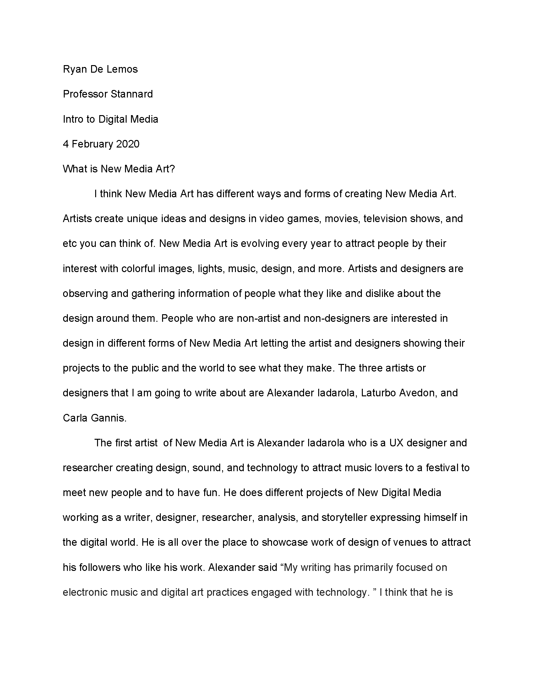 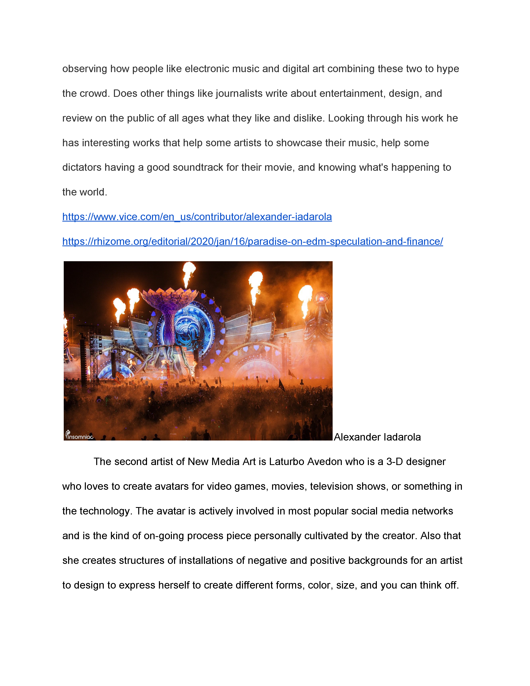 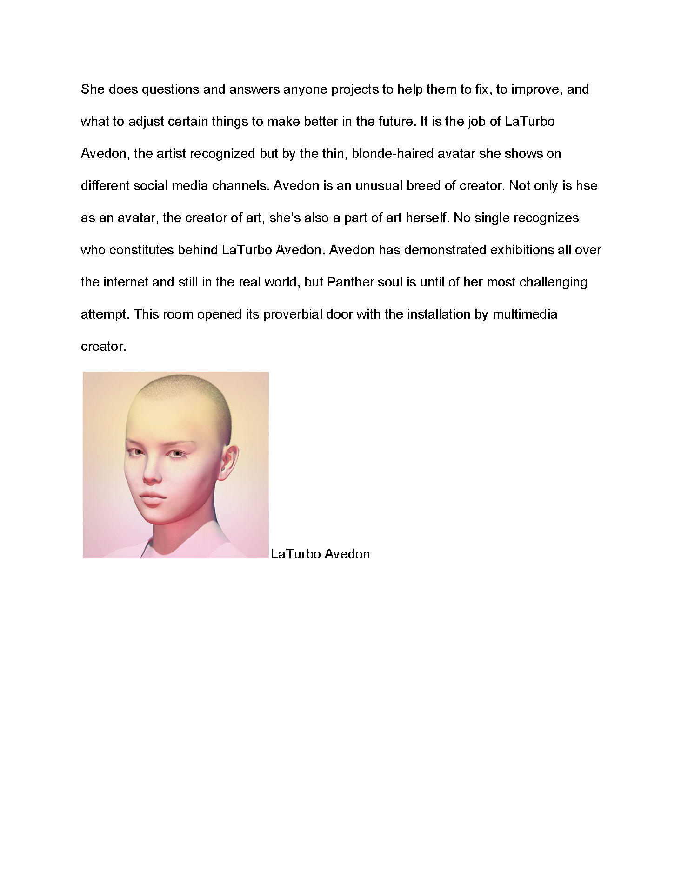 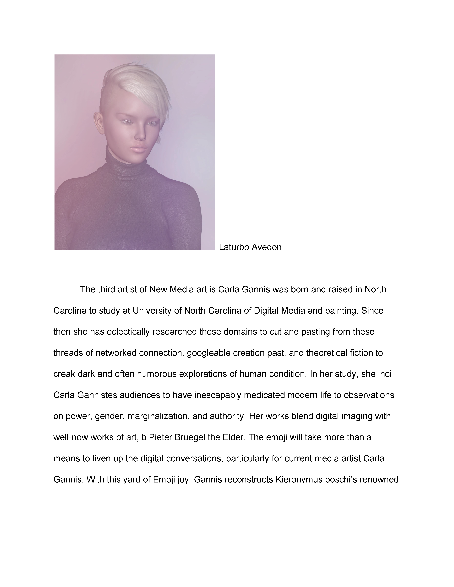 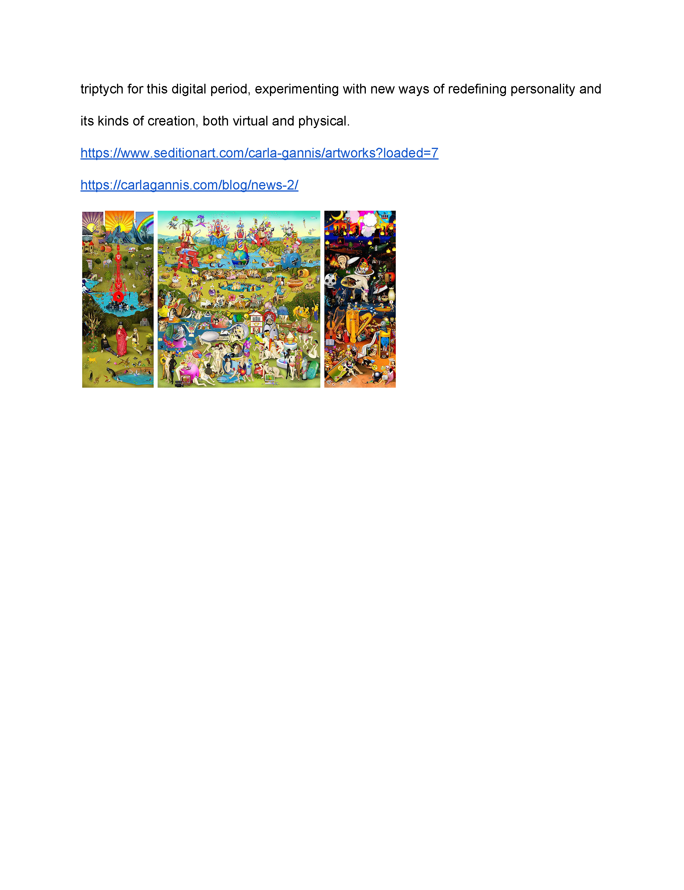Digital Image Compostion

Glitch Art
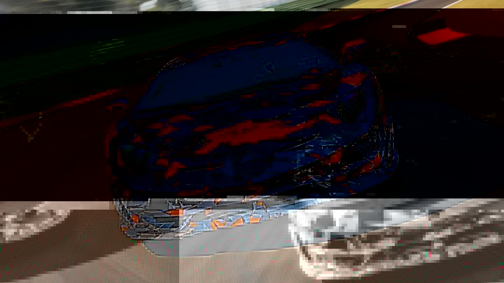NetArt
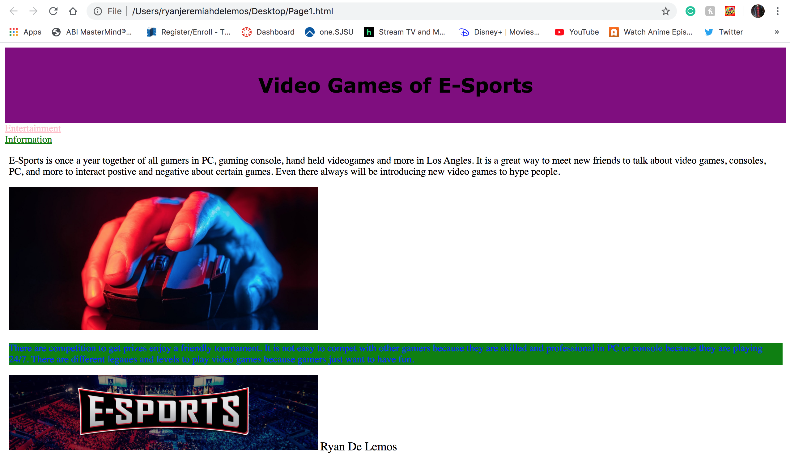 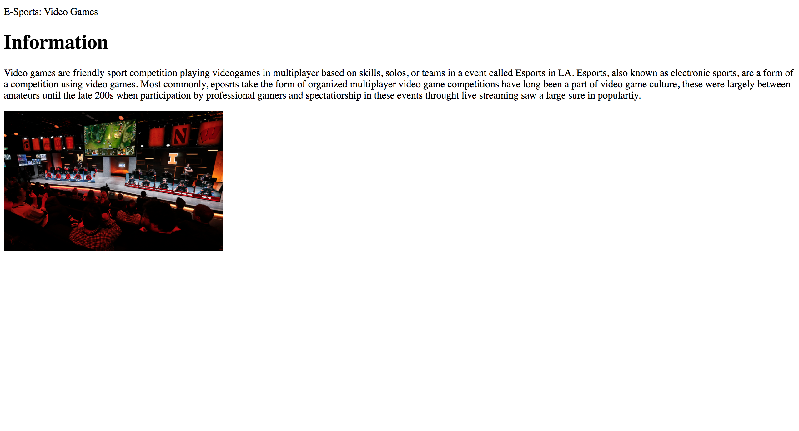
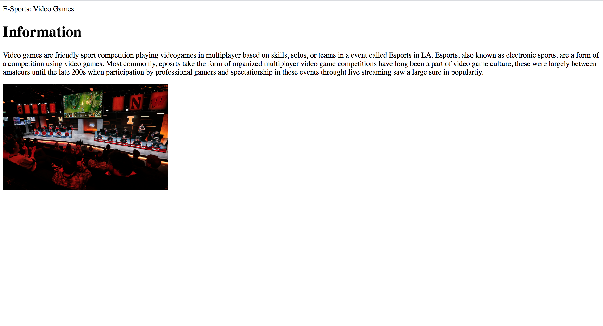
Remixed 3D Art
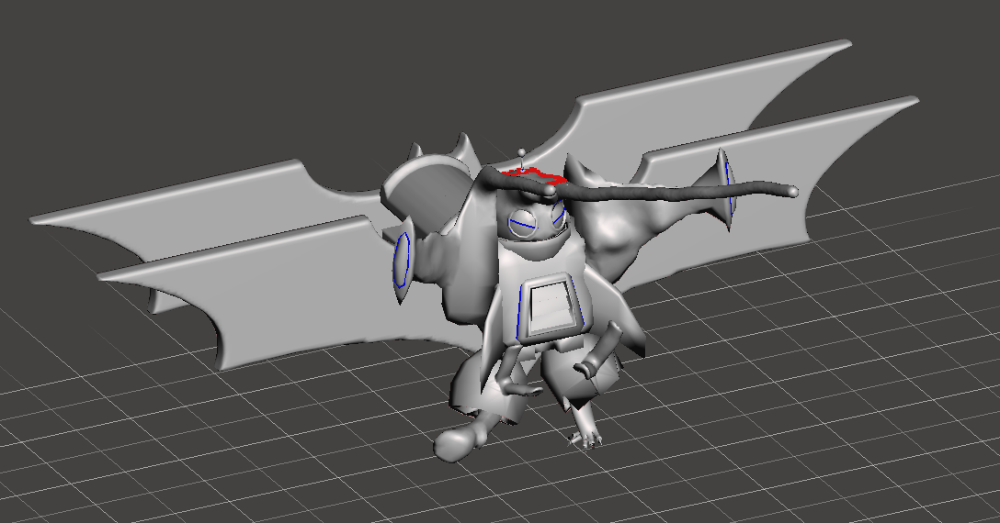Mission Community College
Adobe Software Work
I started to learn Graphic Design and Adobe softeware in Fall 2015 at Mission Community College. I learned a lot of Illustrator and Photoshop. This five classes that I took in Advace Adobe Illustrator, Intro Com Graphic Design, Intro Digital Arts, Beginninger Photoshop, and Intro Adobe Illustrator are one of my top five works at Community College.
Advace Adobe Illustrator
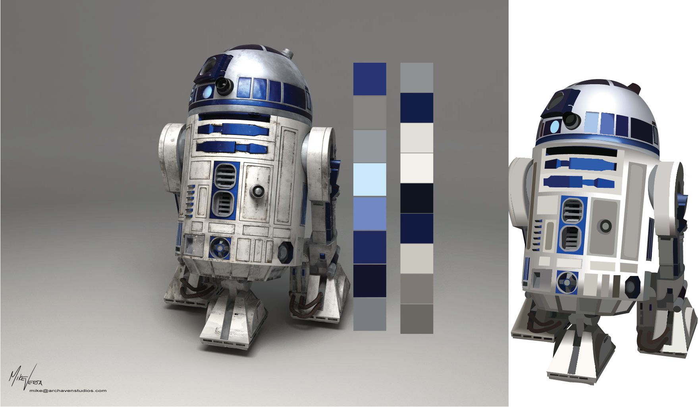Intro Com Graphic Design
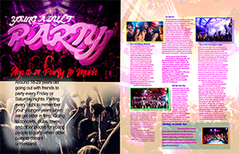Intro Digital Arts

Beginninger Photoshop
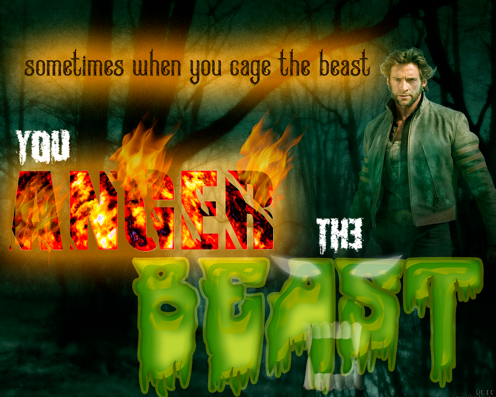Intro Adobe Illustrator